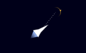
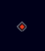

Introduction
Welcome to MMOSG! This is a simple browser-based strategy game with support for a number of different modes (teams, free-for-all, io hop-in-any-time, etc). This guide will cover the controls and briefly explain many of the features; for more help, join the MMOSG Discord server.
Make sure to read this manual thoroughly before submitting bug reports - some bugs are known, some are intentional game elements, and some are produced by bad configuration.
Joining an MMOSG Game
When you first visit the MMOSG page, you'll see something like this (as MMOSG is in active development, this may change):
There are a few key points here. The blue bar on the side contains all your configuration - it is also scrollable, and at the bottom is the START button. At the top of the config bar is the server input - this is a bit in-depth, but you can autofill it just by clicking one of the items in the Famous Servers list to the right.
You can also change your play mode in the config bar. New players should generally start in Normal Mode, which spawns you as a castle with four Basic Fighters (see Fighter Types) and 100 points (which can be used to buy new weapons). Defensive mode spawns you as a castle with two Basic Fighters, two Laser Turrets (see Passive Types) and 25 points, and RTF Mode spawns you as a real time fighter with two basic fighters and no points.
Important: Some systems may not have the resources necessary to handle all the graphics effects. If you notice lag, the first thing you should do is disable the fancy background by toggling the switch in the config bar.
The final thing you need to worry about before you press START (scroll down on the config bar to reach it) is your banner. This is like a nickname. Everything in MMOSG has a banner (you can view it by hovering any object); it identifies the person who placed it. MMOSG will generate randomized banners if you want to play anonymously, but you should really set it to something descriptive. You can always change it at any time. Clearing site data in your browser will erase your banner, but you can add it back.
Once you click START, if your server connection is correct (it has to load the current state of the map over to your computer, so be patient!)
you'll see a screen like this:

This is the game interface. We always start at the top-left corner of the map (outlined in white), and inside the map there is a Chest (see Passive Types) visible. Scroll around a bit (WASD, arrow keys, or trackpad scroll will work intuitively; hold shift to scroll left-right on a mouse) and you'll see some Blocks, Walls, and perhaps even other players. For a quick summary of the board (omitting some cloaked types), you can look at minimap on the top-left of the screen: it will not give you type information, but will tell you where most things are.
Congratulations, you've joined the game!
Using the Interface
The interface is quite complicated. This gives you plenty of features to use, but also means that you tend to have a lot of redundant information; you can safely ignore the majority of the items.
On the sidebar (below the minimap) there will be a blank space; this is because we don't have a castle yet, so castle-related features can't activate. When the CASTLE PLACEMENT readout on the side says AVAILABLE, you can click to establish your main castle - if you're playing in Normal mode, some Basic Fighters will appear around a Castle. On the minimap, these will be colored green - they're all friendly, because they belong to you. If another player joins, their objects will be red on the minimap. If you can't place a castle, it's because you're in a no-place zone: make sure the CASTLE PLACEMENT readout is AVAILABLE! You should see an Upgrades panel spring to life. Most of those are meant for RTFs only (applying them to castles is a work-in-progress); for now, you can cloak your castle, making it harder to find for enemies (it won't appear on the minimap, or at all during Play mode). For more, see RTF Upgrades.
There is also an XY readout, telling you where on the map your mouse is, and a READY/NOT READY button: click this to toggle it. When in MOVE SHIPS mode, toggling this tells the server that you are willing to skip the rest of the period and go straight to PLAY. If every player on the map is READY, it will go to PLAY immediately.
Scroll down on the sidebar to view an Early Warning System (which gets gradually more alarming the closer objects get to your castle), a compass, and the data bars. The Compass has three components: the near-field readout (this shows what's near your castle; it's similar to the minimap), the Pointer (which tells you what direction your castle is in relative to your mouse), and the Control Pad, which tells you what controls you're currently using.
The data bars give you information on, from the left respectively, Damage, Radiation, and Danger. Damage is how much your castle's been hit; if it reaches the top, you die. Radiation is a large invisible field produced by nuclear weapons which does steady damage to objects inside it; it's useful to know if you're going to send a fighter careening through irradiated space. Danger is a simpler version of the Early Warning System.
Pressing "i" converts to the second page of the sidebar, the Inventory - this is where you go to buy things. There will be a list of things you can buy, with prices attached. There is also a VARIANT label in each one - you can safely ignore this; it's only useful if you have preconfigured variants. When in MOVE SHIPS mode, click one of the items in the inventory and then click on the map somewhere near your castle, and it'll spring to life! You can't ever buy anything that costs more than your current score, and that money will be deducted from your score. Some purchases (like the +2 WALLS) upgrade won't let you place anything, but you'll have new abilities - more walls to place each turn.
Atop every editable ship you own, there should be a shape with an arrow. Click in the center of it or in the ship's center to pick it up - this is the goal handle. Clicking anywhere on the map will drop the goal handle there, and when the game goes to PLAY the ship will attempt to reach its goal handle. After the second click, the arrow will point towards your mouse - this is the angle set mode, and you can just click again to set the angle that the ship will attempt to reach. This is useful for aiming ships that fire bullets. If picking up the goal handle doesn't work, don't panic! Check your inventory to see if anything is selected to buy; you can't move a ship while buying new ships. Also, try clicking in different spots - there's a good chance you didn't click in the right place. Try clicking the center of the ship if you're trying to pick it up by the goal handle, as selecting the goal handle can be harder.
Keybinds
There are several useful keybinds. WASD and arrow keys scroll (as has already been mentioned), or control a real time fighter. The "r" key pressed during RTF play will change flight viewpoint, which is preferable for some players. "i" opens the inventory, and in MOVE SHIPS mode "q" places a Wall (of which you have a limited amount every turn, but can buy more). Holding control will allow you to place many of a type (it won't clear the inventory selection on click, so you can click again to place another object).
Some keybinds are configurable through the carrier editor - each berth in the editor corresponds to a number key.
Captures, Trades, and Friendly Fire
Once you have your strategies set and the game goes into PLAY mode (whether because of ready states or because the clock ran down), the fighters all move in the formations you prepared. Usually the game won't be won on the first turn, but oftentimes you'll end up killing enemy objects, whether ships or passive pieces. When this happens, you receive half again the price of that object for cheaper objects, so a basic fighter costs 10 coins and is worth 15 score to the killer. This is called a capture. That money can be used to buy more weapons with which to do more damage, allowing a growth dynamic.
Sometimes, kills won't be affected with bullets - they'll be by collision damage. Collision kills are risky, as without already weakening the enemy ship, your ship will be lost in the collision - equally strong ships annhilate each other. In this case, you have made a trade. This is usually fiscally beneficial to both parties - for instance, trading basic fighters will pay for the fighters and add 5 more points. Sometimes, trades will be uneven, such as a Sniper colliding with a Basic Fighter; in this case, whoever lost the more expensive piece lost the trade. It's important to understand how to accurately trade pieces, as it tends to be necessary as the game progresses to nuclear war - if you can't anticipate and counter the warhead's trajectory, you'll probably lose the game. The most easily traded pieces are hypersonic missiles, as clusters of them on similar routes will usually trade.
MMOSG permits Friendly Fire, where friendly pieces can damage each other. Your bullets will hurt your pieces, your lasers will burn through even your castle in reaching their target, and your hypersonic missiles may blow each other up; in short, all the bad things you can do to enemies, you can do to yourself. The main difference is that friendly fire does not grant you any money at all (with one notable exception: Gold Bars can be collected by anyone); so you must be careful! In some cases, this is desirable, such as managing unwanted walls placed on an earlier turn, but in general it's purely something to be careful about.
Fighter Types
In MMOSG terminology, "fighter" and "ship" are often used interchangeably. This is problematic - a "ship" is any MMOSG object capable of motion; "fighter"s are the basic weapon types. Fighters have no special properties and are usually cheap compared to advanced weapons or passive pieces. As a rule, all fighters can be loaded into carriers. As of time of writing, there are only 4 fighter types:
-
Hypersonic Missile (5): Hypersonic missiles are fast, swooping weapons that explode on contact with almost anything. They do not fire
bullets. They don't do a terribly large amount of damage, but they make up for the lack of force by being fast and swooping over a wide area.
 -
Basic Fighter (10): This is the simplest (although not cheapest) type in MMOSG. It is usually the one you start with. Basic Fighters are
editable types, meaning they can move across the board.
-
Tie Fighter (20): Tie Fighters are the only unupgraded fighter with a repeater; they effectively fire twice as many bullets as a Basic Fighter.
They are also slightly faster than Basic Fighters.
-
Sniper (30): Snipers are fast, well-controlled fighters. They are cloaked on the minimap and can fire at significantly greater range than their
weaker siblings. However, they fire far less frequently.
Passive Types
"Passive" types are any type that cannot move. A better name might perhaps be "fixed" types, as these still generally have complex behaviors. Passive types can, unlike ships, be placed around forts. Passive types are usually defensively oriented (or even constructively, like seeds and green thumbs) and have little offensive capacity, but have the advantage of range (forts can be used to increase your passive-type range well above your active-type range).
-
Wall: Walls are unique in that you get an allotment of them every turn, which you can increase with the +2 WALLS upgrade, instead of having to
buy each one specifically. They can be placed with the "q" key instead of an inventory location. They are very difficult to destroy, taking 5 bullet
hits each; a fully committed basic fighter can only expect to kill three or four walls in a turn. They do not collide with your castle or each other,
so can be safely layered to provide extra defense against laser weapons (bullets will usually hit both, but careful layering can provide security
against even a fully committed tie fighter attack). Walls do experience the friendly fire effect, so an overfortified base will quickly turn to
your detriment as you cannot get resources out of your walls. They will naturally degrade over time.
Walls cannot be placed in carriers.
-
Chest: Chests are small, weak obstructions that appear naturally around the board (and can also be farmed). The killer of a chest receives 50
points capture value. Chest farming is the main way to fund large empires in MMOSG, as capture values for enemy pieces are too infrequent and risky
to fund large carrier operations. Chests naturally degrade faster than walls.
Chests cannot be placed.
-
Seed (10): Seeds are small, vulnerable, passive objects that grow into chests after around two turns. They are the fundamental of farming.
Seeds cannot be placed in carriers.
 -
Gold Bar (100): Gold Bars are very simple. They do not do any damage (bullets will capture them without annhilating themselves) and
have almost no health. Capturing them is worth 100 coins to anyone who does it. They can be placed in carriers.
-
Turret (100): Turrets are rotating machines that fire bullets at nearby enemy ships. They will continue to fire in the last direction they fired in when enemy ships are
not nearby, making them quite dangerous as friendly-fire producers. The three turret types are as of yet indistinguishable; proper art for them is pending.
They can be placed in carriers, and will try to avoid friendly-fire while inside them.
-
Missile Launching System (100): Missile Launching Systems are designed specifically for war with Real Time Fighters.
They fire anti-rtf missiles at any RTF that comes within range. They can be placed inside carriers.
-
Fort (120): Forts are small encampments you can place almost anywhere on the board (but not too near any objects save your castle). If your castle is to die
while you have at least one fort, it will respawn with full health replacing your oldest fort! You can place all passive types (including other forts)
around forts, allowing effective border-development without taking up space for weapon construction. Forts cannot be placed in carriers.
-
Laser Turret (200): Laser Turrets fire high-energy lasers at nearby chests, bullets, and hypersonic missiles. The laser turns off when
nothing is nearby, making them generally friendly-fire-safe, although they will burn through a friendly castle to shoot out ill-placed
bullets or chests. They can be placed inside carriers, and the effect is quite worthwhile.
-
Green Thumb (1000): Green Thumbs are by far the most expensive type in MMOSG, for good reason: they automatically place seeds in a ring around their center.
Turrets and Laser Turrets can be placed atop them, shooting the chests formed by matured seeds. They cannot be placed in carriers.
Advanced Ships
MMOSG has several piece types beyond what we've mentioned so far. None of them are passive. All of them have difficult-to-control effects that, used properly, can be quite devastating.
-
Anti-RTF Smart Missile (7): These are specifically geared to warfare against Real-Time Fighters. When an RTF comes in range, it will
lock on; a single hit will destroy an RTF. Skilled pilots learn to use the RTF's superior turn ability to send anti-RTF missiles swooping off course
into walls or even enemy ships, a very effective tactic. They cannot be placed in carriers.
-
Plasma Cutter (30): Plasma cutters fire a very high-energy short-range laser. The laser generates far too much heat for it to run the engines
while firing (for fear of fuel cooling failure and catastrophic self-destruction), so it only fires while halted - this makes plasma cutters
useful as drills opening holes, but not great for killing defended castles. About 75% of the time, they will destroy bullets that pass through the beam; it's
not a good idea to rely on that, though. They can be placed in carriers and the effect is devastating.
-
Artillery (50): Artilleries fire explosive rounds that ruin hypersonic formations, wall structures, and seed fields by literally blasting
them away. Artillery blasts are very forceful but do not do any damage, although the collision with the actual explosive is equivalent to a single bullet.
Very useful for preventing the enemy from effectively farming, or for breaking holes for more damaging objects. They can be placed in carriers.
-
Nuke (200): Nukes are fast-moving warheads that detonate upon most collisions, or after its internal timer expires (the time it takes
for a nuke to explode unaided is about 15 seconds). They detonate in a very high energy explosion that does a lot of damage as well as pushing
everything nearby away. They emit a small, high-energy, low-lifespan radiation field that eliminates anything that survived the blast, and a
very large lower-energy high-half-life radiation field that irradiates large sections of the board, leaving chunks of space unusable. Detonating
a nuke is a common last resort, as using them properly is difficult. Nukes can be placed in carriers. If you aren't very experienced,
you shouldn't escalate to the nuclear scale - the more experienced enemy will counter your nukes with snipers and hypersonics, wasting
your money and using friendly-fire against you.
Carriers
Carriers (80) are the final type of ship. They are unique in that they have almost no destructive capacity alone, but are capable of carrying other pieces, across the board. Every piece added to a carrier adds to its total health, and some provide further status effects - hypersonic missiles increase their speed, for instance. Most types "freeze" when in the carrier - pieces with internal timers (like nukes) will not tick down, and most types won't shoot while inside the carrier. The exception is turrets - all turret types will still aim and fire while inside a carrier, but they will be careful not to damage the carrier while doing so (they will not shoot if the bullet would hit the carrier, for instance). Plasma cutters will fire out of the sides and front, forming the Pufferfish Carrier - a particularly devastating carrier form that will happily cut through and destroy almost anything. Carriers can regenerate health, but start with a very low max-health, making empty ones easily killed.
You can load any carriable type into a carrier just by colliding them. All fighter types qualify, as do most advanced types and some passive types. The nearest empty berth to the collision point on the collision side will be filled; if the side is filled, the other side will be checked. If there is no room left in the carrier, damage will proceed as normal with respect to friendly-fire. It is possible to load enemy (or teammate) pieces into a carrier. Taking items out of a carrier can only be done if they're editable - you can't move a turret out of a carrier except by killing the carrier, for instance. If the piece is editable, you can just move it like you normally would: it will be safely dropped out of its berth and allowed to proceed. Items can also be unloaded by killing the carrier, crashing it into an enemy castle or the like (castles do not take collision damage from carriers). This is a useful tactic for carriers full of hypersonic missiles.
Generally carriers are loaded by placing the items for the carrier directly in the desired berths. This has the advantage that you can pick exactly what formation you want, but the disadvantage that you can't safely move the carrier - when the carrier leaps forward, some of your objects may leap out of the carrier, ruining the formation and possibly causing serious damage to you. To solve this, there is a carrier variant editor built-in (link available on the main page); this locally saves up to 9 carrier styles you use often (type 0 is always the default carrier). The default is MOFARD, but feel free to change it. My carrier selection looks like this:
I can use them by selecting CARRIER in the standard MMOSG inventory and hitting a corresponding number key, setting the VARIANT flag. For example, clicking 5 would set the variant to WAR CRIME, which contains four hypersonics (for speed), two nukes, two snipers, and two tie fighters. I can then place it normally on the board, and the price and starting items will be automatically updated. The representation is textual and very simple and forgiving. You're configuring what's automatically placed and assigned (allowing you to immediately move the carrier without worring about dropping objects) by the server with object letters. "n h" would form a nuke with just two things in it: a nuke and a hypersonic, in that order. This is an advanced MMOSG feature, and requests to make it more user-friendly will be ignored.
Carriers are fast-moving and well-controlled, capable of airbraking in under a second after full board traversal. Their immense size and bulk makes them effective as battering rams as much as actual troop transport. Carriers are very obvious on the minimap, but their transport speed makes up for the lack of stealth ability - fully loaded with hypersonic missiles (the cheapest valid carrier formation, known as the BUGGER), the carrier can easily outpace any other object on the field.
Collisions between two carriers are difficult to predict. Their collision damage is not great, so sufficiently full carriers can sometimes collide without annhilating: however, you should never bank on safety with carrier collisions, and instead use turrets and plasma cutters to damage the enemy carrier as you pass it. Carrier annhilations are messy.
Real Time Fighters
Real Time Fighters (RTFs) are the secondary play-mode of MMOSG. They are piloted with the arrow keys, WASD, or (with the feature enabled) the mouse. They're simple, with only 4 motion controls - thrust, left, right, and airbrake. Thrusting (up or W) makes the RTF accelerate in the direction it's pointing; left and right (obvious) change rotational velocity, and airbrake (down or S) slows rotation and linear velocity. They shoot when the space key is pressed, emitting a bullet or a laser beam: the upgrade panel mentioned in Using the Interface allows you to buy new upgrades for the gun, the drive, the cloaking unit, and the RTF's health. Simply click the bar and it'll advance, deducting the cost of the upgrade. Games involving only RTFs will never go to MOVE SHIPS mode, staying forever in PLAY mode. RTFs have the unique ability of teleporting to the other side of the map when they go across the border.
Real time fighters can attack some things (including other RTFs) with Air-2-Air missiles. Swipe your mouse over an enemy RTF and a green highlight box should appear around it - that's the gun lock, which drops if the target gets too far away or you take too long. Thus, you should quickly press "e", dropping the missile from an automatically-selected missile bay. It will immediately begin pursuit. Be careful - friendly fire with air-2-air missiles is one of the most common problems with new MMOSG players.
Real-Time Fighters are meant to assist castles, keeping each other at bay and doing damage to their enemies whenever possible. They are not anywhere near as fun playing alone. In fact this is the primary use case for gold - RTFs have much more trouble attaining money than castles (their farming capacity is significantly less) so their friendly castles should leave gold bars for them to upgrade with. RTFs are the only element of MMOSG that depends more on reaction time and piloting skill than actual strategy, and are ideal for players who would rather just shoot stuff.
Explosions and Lasers
Lasers and explosions are, unlike most MMOSG concepts, not object-based - there is no physical Explosion object persisting over a location, nor is there a long skinny block for each laser. Instead, they exist only for a single frame (until the laser is recast, of course). Lasers simply hit one (it is not possible for a laser to hit two objects at once) object, doing damage to it.
Explosions are usually the result of an annhilation - an artillery round, for instance. They do fixed damage to items within their radius, and buffett objects in a very wide radius. They are also temporary. Explosions tend to propagate - a chain of hypersonics will all go up in flame very quickly if they're too close together and one hits a chest.
Another result of explosions is, in some circumstances, radiation. This is an invisible, long-lasting field that covers a wide area, slowly damaging everything inside it. Radiation can be measured in the data bars, as mentioned in Using the Interface. Radiation can be used to barricade large areas of the map, making them impassible to enemy ships, but that technique is not used often in practice.